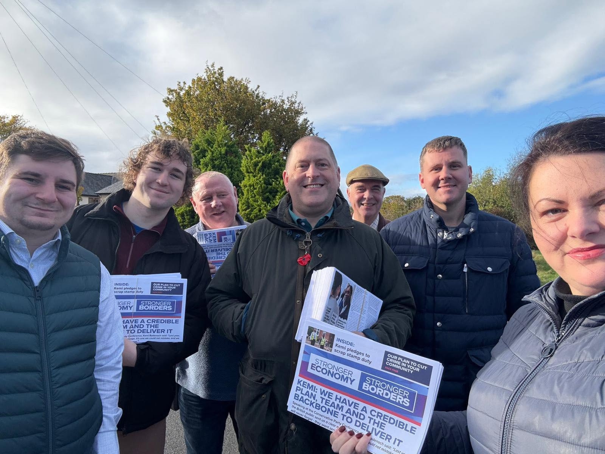

<!DOCTYPE html>
<html lang="en">
<head>
<meta charset="UTF-8">
<meta name="viewport" content="width=device-width, initial-scale=1.0, viewport-fit=cover">
<title>Follow Ben | Back Ben for Mayor</title>
  <meta name="description" content="Follow Ben on the campaign trail, watch the latest videos, get campaign updates and get in touch.">
  <meta name="theme-color" content="#071a34">
  <meta property="og:title" content="About Ben | Back Ben for Mayor">
  <meta property="og:description" content="Meet Ben and learn about the leadership, experience and local approach he would bring to the Cheshire &amp; Warrington mayoralty.">
  <meta property="og:type" content="website">
  <meta property="og:image" content="assets/images/ben-home-hero.jpg">
<link rel="stylesheet" href="assets/css/site.css?v=20260823-canonical-v1">

<style id="final-header-system">
*{box-sizing:border-box}

.site-header{
  width:100%!important;
  max-width:none!important;
  z-index:9999!important;
  overflow:visible!important;
  border:0!important;

  /* Explicitly neutralise the original legacy `header` rule */
  left:0!important;
  right:0!important;
  top:0!important;
  transform:none!important;
  margin:0!important;
}

body.home-page .site-header{
  position:absolute!important;
  top:0!important;
  left:0!important;
  right:0!important;
  background:linear-gradient(to bottom,rgba(4,15,31,.88),rgba(4,15,31,.34),transparent)!important;
}

body:not(.home-page) .site-header{
  position:relative!important;
  left:0!important;
  right:0!important;
  top:0!important;
  transform:none!important;
  background:linear-gradient(100deg,#071a34 0%,#0a315e 55%,#0b72bd 100%)!important;
}

.site-header-inner{
  width:100%!important;
  max-width:none!important;
  min-width:0!important;
  min-height:86px!important;
  margin:0!important;
  padding:0 32px!important;
  display:flex!important;
  align-items:center!important;
  justify-content:space-between!important;
  gap:24px!important;
}

.site-primary-nav{
  display:flex!important;
  position:static!important;
  flex:0 1 auto!important;
  min-width:0!important;
  width:auto!important;
  height:auto!important;
  align-items:center!important;
  justify-content:flex-start!important;
  gap:clamp(14px,1.45vw,28px)!important;
  margin:0!important;
  padding:0!important;
  background:transparent!important;
  box-shadow:none!important;
  visibility:visible!important;
  opacity:1!important;
  white-space:nowrap!important;
  overflow:visible!important;
}

.site-primary-nav a{
  display:inline-block!important;
  flex:0 0 auto!important;
  width:auto!important;
  min-width:0!important;
  margin:0!important;
  padding:0!important;
  border:0!important;
  color:#fff!important;
  font-size:clamp(12px,.95vw,15px)!important;
  line-height:1!important;
  font-weight:800!important;
  text-decoration:none!important;
  white-space:nowrap!important;
  visibility:visible!important;
  opacity:1!important;
}

.site-header-actions{
  display:flex!important;
  flex:0 0 auto!important;
  align-items:center!important;
  gap:12px!important;
  margin:0!important;
  padding:0!important;
}

.site-volunteer-button,
.site-donate-button{
  display:flex!important;
  align-items:center!important;
  justify-content:center!important;
  min-height:52px!important;
  padding:0 clamp(16px,1.55vw,25px)!important;
  color:#fff!important;
  font-size:clamp(12px,.95vw,15px)!important;
  line-height:1!important;
  font-weight:900!important;
  text-decoration:none!important;
  white-space:nowrap!important;
}

.site-volunteer-button{border:1px solid #efe6d7!important;background:#efe6d7!important;color:#071f3d!important;}

.site-donate-button{
  border:1px solid #f04436!important;
  background:#f04436!important;
}

.site-menu-button{display:none!important}
.mobile-menu-actions{display:none!important}

/* Tight desktop: compress rather than shove content offscreen */
@media (max-width:1100px) and (min-width:801px){
  .site-header-inner{padding:0 20px!important;gap:14px!important}
  .site-primary-nav{gap:11px!important}
  .site-primary-nav a{font-size:11.5px!important}
  .site-header-actions{gap:8px!important}
  .site-volunteer-button,.site-donate-button{
    min-height:46px!important;
    padding:0 13px!important;
    font-size:11.5px!important;
  }
}

/* One clean mobile breakpoint. */
@media (max-width:800px){
  .site-header-inner{
    min-height:72px!important;
    padding:10px 16px!important;
    justify-content:flex-end!important;
    position:relative!important;
  }

  .site-menu-button{
    display:block!important;
    width:auto!important;
    min-width:106px!important;
    height:52px!important;
    border:1px solid rgba(255,255,255,.68)!important;
    background:transparent!important;
    color:#fff!important;
    font-size:16px!important;
    font-weight:900!important;
  }

  .site-header-actions{display:none!important}

  .site-primary-nav{
    display:none!important;
    position:absolute!important;
    top:100%!important;
    left:0!important;
    right:0!important;
    width:100%!important;
    padding:8px 18px 18px!important;
    background:#061a31!important;
    box-shadow:0 18px 35px rgba(0,0,0,.25)!important;
    white-space:normal!important;
  }

  .site-primary-nav.open{display:block!important}

  .site-primary-nav a{
    display:block!important;
    width:100%!important;
    padding:15px 6px!important;
    border-bottom:1px solid rgba(255,255,255,.11)!important;
    font-size:16px!important;
  }
}
</style>


<style id="follow-ben-v1">
body:has(.follow-hero) .site-header{position:absolute!important;top:0;left:0;right:0;z-index:20;background:linear-gradient(to bottom,rgba(4,20,39,.95),rgba(4,20,39,.45),transparent)!important;border:0!important;box-shadow:none!important}
.follow-ben-page{background:#f7f2e8;color:#071f3d}
.follow-hero{height:640px;position:relative;overflow:hidden;color:#fff}
.follow-hero-image{position:absolute;inset:0;background:url("assets/images/ben-news-hero.jpg") center 43%/cover no-repeat}
.follow-hero-shade{position:absolute;inset:0;background:linear-gradient(90deg,rgba(3,18,36,.84),rgba(3,18,36,.22) 58%,rgba(3,18,36,.05)),linear-gradient(to top,rgba(3,18,36,.72),transparent 55%)}
.follow-hero-copy{position:relative;z-index:2;height:100%;display:flex;flex-direction:column;justify-content:flex-end;padding-bottom:54px}
.follow-hero h1{margin:0;font-size:clamp(76px,9vw,126px);line-height:.84;letter-spacing:-.065em;color:#fff}
.follow-hero p{margin:18px 0 24px;font-size:23px;font-weight:700;color:#fff}
.follow-social-links{display:flex;gap:10px;flex-wrap:wrap}
.follow-social-links a{color:#fff;border:1px solid rgba(255,255,255,.55);padding:10px 15px;font-weight:900;text-decoration:none}
.follow-social-links a:hover{background:#fff;color:#071f3d}

.campaign-stream{padding:74px 0 88px}
.stream-heading{display:flex;justify-content:space-between;align-items:end;gap:30px;margin-bottom:34px}
.stream-heading h2,.watch-heading h2,.follow-signup h2,.follow-contact h2{font-size:54px;line-height:.95;margin:0;letter-spacing:-.04em}
.stream-heading p{max-width:430px;margin:0;color:#5c6d7e;font-size:17px}

.social-wall{display:grid;grid-template-columns:1.1fr .85fr .85fr;grid-auto-rows:230px;gap:14px}
.social-post{position:relative;overflow:hidden;background:#071f3d}
.social-post img{width:100%;height:100%;object-fit:cover;display:block;transition:transform .35s ease}
.social-post:hover img{transform:scale(1.025)}
.social-post-wide{grid-column:span 2}
.social-post-tall{grid-row:span 2}
.social-post-copy{position:absolute;left:0;right:0;bottom:0;padding:50px 22px 20px;background:linear-gradient(transparent,rgba(3,18,36,.9));color:#fff}
.social-post-copy span{font-size:12px;font-weight:900}
.social-post-copy p{margin:5px 0 0;font-size:20px;line-height:1.2;font-weight:900}
.social-note{background:#f54436;color:#fff;padding:28px;display:flex;flex-direction:column;justify-content:space-between}
.social-note p{font-size:28px;line-height:1.05;font-weight:900;margin:0}
.social-note a{color:#fff;font-weight:900}

.follow-signup{background:#071f3d;color:#fff;padding:68px 0}
.follow-signup-grid{display:grid;grid-template-columns:.85fr 1.3fr;gap:80px;align-items:center}
.follow-signup h2{color:#fff}
.follow-signup p{color:#c0ccd6;font-size:17px;line-height:1.5;max-width:480px}
.follow-signup-form{display:grid;grid-template-columns:1fr 1fr;gap:10px}
.follow-signup-form input,.follow-contact-form input,.follow-contact-form textarea{border:1px solid #b9b3aa;background:#fff;padding:0 16px;min-height:58px;font:inherit}
.follow-signup-form .btn{grid-column:span 2}

.watch-ben{padding:82px 0}
.watch-heading{display:flex;justify-content:space-between;align-items:end;margin-bottom:28px}
.watch-heading a{color:#071f3d;font-weight:900}
.watch-grid{display:grid;grid-template-columns:1.45fr .75fr;gap:16px}
.watch-card{height:340px;position:relative;overflow:hidden;color:#fff;text-decoration:none}
.watch-card-main{height:500px}
.watch-card img{width:100%;height:100%;object-fit:cover}
.watch-card:after{content:"";position:absolute;inset:0;background:linear-gradient(transparent 48%,rgba(3,18,36,.88))}
.watch-card strong{position:absolute;z-index:2;left:24px;bottom:22px;font-size:27px;max-width:70%;color:#fff}
.watch-play{position:absolute;z-index:3;right:22px;bottom:22px;width:56px;height:56px;border-radius:50%;background:#fff;color:#071f3d;display:grid;place-items:center}

.follow-contact{background:#fff;padding:78px 0}
.follow-contact-grid{display:grid;grid-template-columns:.75fr 1.25fr;gap:90px}
.follow-contact-intro>p{color:#5d6f80;line-height:1.5;font-size:17px;max-width:460px}
.contact-routes{margin-top:38px}
.contact-routes p{margin:0 0 22px}
.contact-routes a{color:#071f3d}
.follow-contact-form{display:grid;gap:10px}
.follow-two{display:grid;grid-template-columns:1fr 1fr;gap:10px}
.follow-contact-form textarea{min-height:170px;padding-top:16px;resize:vertical}
.follow-contact-form .btn{justify-self:start}

.follow-next{background:#f7f2e8;padding:50px 0 70px}
.follow-next-grid{display:grid;grid-template-columns:repeat(3,1fr);gap:12px}
.follow-next a{background:#fff;padding:28px;text-decoration:none;color:#071f3d;min-height:130px;display:flex;flex-direction:column;justify-content:flex-end}
.follow-next span{color:#68798a;font-size:13px}
.follow-next strong{font-size:30px}
.follow-next a:hover{background:#071f3d;color:#fff}
.follow-next a:hover span{color:#c3ced7}

@media(max-width:900px){
 .follow-hero{height:560px}
 .social-wall{grid-template-columns:1fr 1fr;grid-auto-rows:240px}
 .social-post-wide{grid-column:span 2}
 .follow-signup-grid,.follow-contact-grid{grid-template-columns:1fr;gap:34px}
 .watch-grid{grid-template-columns:1fr}
 .watch-card,.watch-card-main{height:360px}
}
@media(max-width:650px){
 .follow-hero{height:520px}
 .follow-hero h1{font-size:68px}
 .follow-hero p{font-size:19px}
 .stream-heading,.watch-heading{display:block}
 .stream-heading h2,.watch-heading h2,.follow-signup h2,.follow-contact h2{font-size:44px}
 .stream-heading p{margin-top:14px}
 .social-wall{display:block}
 .social-wall>*{height:300px;margin-bottom:12px}
 .social-note{height:220px}
 .follow-signup-form,.follow-two,.follow-next-grid{grid-template-columns:1fr}
 .follow-signup-form .btn{grid-column:auto}
 .watch-heading a{display:inline-block;margin-top:10px}
}
</style>

  <link rel="stylesheet" href="https://unpkg.com/leaflet@1.9.4/dist/leaflet.css">

<style id="follow-map-and-actions-v2">
.follow-map-section{
  background:#071f3d;
  color:#fff;
  padding:76px 0 82px;
}
.follow-map-heading{
  display:flex;
  justify-content:space-between;
  align-items:end;
  gap:40px;
  margin-bottom:30px;
}
.follow-map-heading h2{
  margin:0 0 10px;
  color:#fff;
  font-size:54px;
  line-height:.95;
  letter-spacing:-.04em;
}
.follow-map-heading p{
  margin:0;
  color:#c2ced8;
  font-size:17px;
  line-height:1.5;
}
.follow-map-heading>a{
  color:#fff;
  font-weight:900;
  white-space:nowrap;
}
.follow-campaign-map{
  width:100%;
  height:560px;
  background:#e9e4d9;
}
.follow-campaign-map .leaflet-popup-content-wrapper{
  border-radius:0;
  box-shadow:0 14px 36px rgba(0,0,0,.18);
}
.follow-campaign-map .leaflet-popup-content{
  margin:18px 20px 18px;
  min-width:220px;
}
.map-popup-type{
  margin:0 0 6px;
  color:#f54436;
  font-size:11px;
  font-weight:900;
  text-transform:uppercase;
  letter-spacing:.08em;
}
.map-popup-title{
  margin:0 0 7px;
  color:#071f3d;
  font-size:21px;
  line-height:1.05;
  font-weight:900;
}
.map-popup-copy{
  margin:0 0 12px;
  color:#596b7c;
  font-size:13px;
  line-height:1.45;
}
.map-popup-link{
  color:#071f3d;
  font-size:13px;
  font-weight:900;
  text-decoration:none;
}

.follow-next{
  background:#f7f2e8;
  padding:76px 0 86px;
}
.follow-next-heading{
  display:flex;
  justify-content:space-between;
  align-items:end;
  gap:32px;
  margin-bottom:30px;
}
.follow-next-heading h2{
  margin:0;
  font-size:50px;
  line-height:.96;
  letter-spacing:-.04em;
}
.follow-next-heading p{
  margin:0;
  color:#617284;
  font-size:17px;
}
.follow-next-grid{
  display:grid;
  grid-template-columns:repeat(3,1fr);
  gap:18px;
}
.follow-next-card{
  display:block!important;
  min-height:0!important;
  padding:0!important;
  background:#fff!important;
  color:#071f3d!important;
  text-decoration:none!important;
}
.follow-next-card:hover{
  background:#fff!important;
  color:#071f3d!important;
}
.follow-next-image{
  height:220px;
  background-size:cover;
  background-position:center;
  overflow:hidden;
}
.follow-next-tell .follow-next-image{
  background-image:
    linear-gradient(rgba(4,20,39,.12),rgba(4,20,39,.12)),
    url("assets/images/ben-area.jpg");
}
.follow-next-volunteer .follow-next-image{
  background-image:
    linear-gradient(rgba(4,20,39,.08),rgba(4,20,39,.08)),
    url("assets/images/ben-volunteer-hero.jpg");
}
.follow-next-events .follow-next-image{
  background-image:
    linear-gradient(rgba(4,20,39,.10),rgba(4,20,39,.10)),
    url("assets/images/ben-events-hero.jpg");
}
.follow-next-copy{
  padding:24px 24px 28px;
}
.follow-next-copy span{
  display:block;
  margin-bottom:7px;
  color:#f54436!important;
  font-size:13px;
  font-weight:900;
}
.follow-next-copy strong{
  display:block;
  margin-bottom:10px;
  color:#071f3d!important;
  font-size:28px!important;
  line-height:1.05;
  letter-spacing:-.03em;
}
.follow-next-copy p{
  margin:0;
  color:#5d6f80;
  font-size:15px;
  line-height:1.5;
}
.follow-next-card:hover .follow-next-image{
  filter:brightness(.92);
}

@media(max-width:900px){
  .follow-map-heading,
  .follow-next-heading{
    display:block;
  }
  .follow-map-heading>a{
    display:inline-block;
    margin-top:14px;
  }
  .follow-next-heading p{
    margin-top:12px;
  }
  .follow-next-grid{
    grid-template-columns:1fr;
  }
  .follow-next-card{
    display:grid!important;
    grid-template-columns:.9fr 1.1fr;
  }
  .follow-next-image{
    height:100%;
    min-height:230px;
  }
}
@media(max-width:650px){
  .follow-map-section,
  .follow-next{
    padding:58px 0 64px;
  }
  .follow-map-heading h2,
  .follow-next-heading h2{
    font-size:42px;
  }
  .follow-campaign-map{
    height:460px;
  }
  .follow-next-grid{
    gap:14px;
  }
  .follow-next-card{
    display:block!important;
  }
  .follow-next-image{
    height:220px;
    min-height:0;
  }
}
</style>

<style id="follow-icons-v1">.follow-social-links.ben-social-row{justify-content:flex-start}.follow-social-links.ben-social-row span{width:42px;height:42px;display:grid;place-items:center;border:1px solid rgba(255,255,255,.7);border-radius:50%;color:#fff;font-weight:900}@media(max-width:800px){.follow-social-links.ben-social-row{justify-content:flex-start!important}}</style>
<link rel="stylesheet" href="assets/css/mobile-parity.css?v=20260823-canonical-v1">


<style id="mobile-parity-v4">
@media (max-width:800px){

  /* Open mobile menu: full-screen navy from the very top */
  .site-primary-nav.open{
    position:fixed!important;
    inset:0!important;
    top:0!important;
    width:100vw!important;
    min-height:100dvh!important;
    padding:170px 24px 32px!important;
    background:#061a31!important;
    z-index:9998!important;
    overflow-y:auto!important;
    box-shadow:none!important;
  }

  /* Keep header chrome above the overlay */
  .site-header{
    position:absolute!important;
    top:0!important;
    left:0!important;
    right:0!important;
    z-index:10000!important;
    background:transparent!important;
  }

  /* Mobile logo always visible and centred */
  .site-logo{
    position:absolute!important;
    left:50%!important;
    top:22px!important;
    transform:translateX(-50%)!important;
    z-index:10002!important;
    display:block!important;
    opacity:1!important;
    visibility:visible!important;
  }
  .site-logo img{
    display:block!important;
    width:104px!important;
    max-width:104px!important;
    height:auto!important;
    opacity:1!important;
  }

  /* Hamburger / close button: no box, top-right */
  .site-menu-button{
    position:absolute!important;
    right:24px!important;
    top:26px!important;
    width:44px!important;
    height:44px!important;
    padding:0!important;
    border:0!important;
    outline:0!important;
    background:transparent!important;
    box-shadow:none!important;
    z-index:10003!important;
  }
  .site-menu-button::before,
  .site-menu-button::after,
  .site-menu-button span{
    box-shadow:none!important;
  }

  /* Navigation links */
  .site-primary-nav.open>a{
    display:block!important;
    width:100%!important;
    margin:0!important;
    padding:20px 12px!important;
    border-bottom:1px solid rgba(255,255,255,.16)!important;
    font-size:24px!important;
    line-height:1.15!important;
    color:#fff!important;
    text-align:left!important;
  }

  /* Mobile CTA row */
  .site-primary-nav.open .nav-actions,
  .site-primary-nav.open .site-nav-actions,
  .site-primary-nav.open .mobile-nav-actions{
    display:grid!important;
    grid-template-columns:1fr 1fr!important;
    gap:16px!important;
    width:100%!important;
    margin-top:28px!important;
  }

  /* Volunteer = cream/navy on mobile */
  .site-primary-nav.open .site-volunteer-button,
  .site-primary-nav.open a[href*="volunteer"]{
    background:#efe6d7!important;
    color:#071f3d!important;
    border:1px solid #efe6d7!important;
  }

  /* Donate = orange/white on mobile */
  .site-primary-nav.open .site-donate-button,
  .site-primary-nav.open a[href*="donate"]{
    background:#f04436!important;
    color:#fff!important;
    border:1px solid #f04436!important;
  }

  .site-primary-nav.open .site-volunteer-button,
  .site-primary-nav.open .site-donate-button,
  .site-primary-nav.open .nav-actions a,
  .site-primary-nav.open .site-nav-actions a,
  .site-primary-nav.open .mobile-nav-actions a{
    min-height:64px!important;
    display:flex!important;
    align-items:center!important;
    justify-content:center!important;
    padding:16px 14px!important;
    font-size:20px!important;
    font-weight:900!important;
    text-align:center!important;
    text-decoration:none!important;
    border-radius:0!important;
  }

  /* Prevent hero or page content from visually bleeding through open menu */
  body.menu-open main,
  body.menu-open footer,
  body.menu-open .page-hero,
  body.menu-open .home-hero{
    visibility:hidden!important;
  }
}
</style>


<style id="mobile-source-fix-v6">
@media (max-width:800px){

  /* MENU: one logo, one CTA pair, no dividers, no duplicate header actions */
  body.menu-open .site-header-actions,
  .site-primary-nav.open ~ .site-header-actions,
  .site-header-actions{
    display:none!important;
  }

  .site-primary-nav.open{
    position:fixed!important;
    inset:0!important;
    width:100vw!important;
    min-height:100dvh!important;
    padding:34px 24px 34px!important;
    background:#061a31!important;
    z-index:9998!important;
    display:flex!important;
    flex-direction:column!important;
    align-items:stretch!important;
    overflow-y:auto!important;
    box-sizing:border-box!important;
  }

  .site-primary-nav.open .site-mobile-menu-logo{
    display:block!important;
    margin:72px 0 44px 8px!important;
    padding:0!important;
    border:0!important;
    width:max-content!important;
    flex:0 0 auto!important;
  }
  .site-primary-nav.open .site-mobile-menu-logo img{
    width:154px!important;
    height:auto!important;
    display:block!important;
  }

  .site-primary-nav.open>a:not(.site-mobile-menu-logo){
    display:block!important;
    padding:12px 8px!important;
    margin:0 0 10px!important;
    border:0!important;
    border-bottom:0!important;
    box-shadow:none!important;
    font-size:23px!important;
    line-height:1.15!important;
    color:#fff!important;
  }

  .site-primary-nav.open .site-mobile-actions{
    display:grid!important;
    grid-template-columns:1fr 1fr!important;
    gap:14px!important;
    margin-top:28px!important;
    width:100%!important;
  }

  .site-primary-nav.open .site-mobile-actions a{
    display:flex!important;
    align-items:center!important;
    justify-content:center!important;
    min-height:62px!important;
    padding:14px!important;
    border:0!important;
    font-size:19px!important;
    font-weight:900!important;
    text-decoration:none!important;
    box-sizing:border-box!important;
  }
  .site-primary-nav.open .site-mobile-actions .mobile-volunteer{
    background:#efe6d7!important;
    color:#071f3d!important;
  }
  .site-primary-nav.open .site-mobile-actions .mobile-donate{
    background:#f04436!important;
    color:#fff!important;
  }

  /* Header logo remains normal when menu closed, hidden only when open */
  body.menu-open .site-header-logo{
    opacity:0!important;
    visibility:hidden!important;
  }

  /* PLAN: independent mobile composition, patterned after Tell Ben */
  .plan-photo-hero{
    min-height:690px!important;
    height:auto!important;
    position:relative!important;
    overflow:hidden!important;
  }

  .plan-photo-hero-bg{
    position:absolute!important;
    inset:0!important;
    background-position:center 42%!important;
    background-size:cover!important;
  }

  .plan-photo-hero-inner{
    min-height:690px!important;
    display:flex!important;
    flex-direction:column!important;
    justify-content:flex-end!important;
    align-items:stretch!important;
    gap:22px!important;
    padding:190px 28px 38px!important;
    box-sizing:border-box!important;
  }

  .plan-photo-hero-inner>div:first-child{
    width:100%!important;
    max-width:none!important;
    margin:0!important;
  }

  .plan-photo-hero h1{
    margin:0 0 14px!important;
    max-width:100%!important;
    font-size:50px!important;
    line-height:.94!important;
    letter-spacing:-.045em!important;
    overflow-wrap:normal!important;
  }

  .plan-photo-hero p{
    margin:0!important;
    max-width:92%!important;
    font-size:20px!important;
    line-height:1.42!important;
  }

  .plan-hero-postcode{
    width:100%!important;
    max-width:none!important;
    margin:0!important;
    padding:18px!important;
    box-sizing:border-box!important;
    background:rgba(7,31,61,.84)!important;
  }

  .plan-hero-postcode label{
    margin-bottom:12px!important;
    font-size:16px!important;
  }

  .plan-hero-postcode>div{
    display:grid!important;
    grid-template-columns:minmax(0,1fr) 96px!important;
    gap:0!important;
  }

  .plan-hero-postcode input,
  .plan-hero-postcode button{
    height:58px!important;
    min-height:58px!important;
    box-sizing:border-box!important;
  }

  .plan-hero-postcode input{
    width:100%!important;
    padding:0 15px!important;
    font-size:17px!important;
  }

  .plan-hero-postcode button{
    width:96px!important;
    min-width:96px!important;
    padding:0!important;
    font-size:17px!important;
  }
}

<body class="inner-page about-hero-page about-fade-page">
<div class="site-shell about-fade-shell">

<header class="site-header">
  <div class="site-header-inner">
    <a class="site-header-logo" href="index.html" aria-label="Back Ben home">
    <nav class="site-primary-nav">
      <a href="about.html">About Ben</a>
      <a href="plan.html">Ben’s Plan</a>
      <a href="news.html">News</a>
      <a href="events.html">Events</a>
      <a href="tell-ben.html">Tell Ben</a>
      <a href="follow-ben.html" aria-current="page">Follow Ben</a>
      <a href="contact.html">Contact Ben

    

    <div class="site-header-actions">
      <a class="site-volunteer-button" href="volunteer.html">Volunteer</a>
      <a class="site-donate-button" href="donate.html">Donate
  


<main class="follow-ben-page">
  <section class="follow-hero">
    
    
    <div class="container follow-hero-copy">
      <h1>Follow Ben.</h1>
      <p>On the road, online and around Cheshire &amp; Warrington.</p>
      <div class="follow-social-links ben-social-row" aria-label="Social media"><span aria-label="Facebook" title="Facebook">f</span><span aria-label="Instagram" title="Instagram">◎</span><span aria-label="X" title="X">𝕏</span><span aria-label="TikTok" title="TikTok">♪
    

  <section class="campaign-stream">
    <div class="container">
      <div class="stream-heading">
        <h2>From the campaign.</h2>
        <p>Latest visits, conversations and moments from the road.

      <div class="social-wall">
        <article class="social-post social-post-wide">
          
          <div class="social-post-copy">
            <span>On the air</span>
            <p>Talking about what Cheshire &amp; Warrington needs from its first mayor.
        </article>

        <article class="social-post social-post-tall">
          
          <div class="social-post-copy">
            <span>Out listening</span>
            <p>Good conversations are where better local decisions start.
        </article>

        <article class="social-note">
          <p>“Politics works better when you start by listening.”</p>
          <a href="tell-ben.html">Tell Ben what matters

        <article class="social-post">
          
          <div class="social-post-copy">
            <span>Across the region</span>
            <p>Meeting residents and campaigners and hearing what needs to change.
        </article>

        <article class="social-post social-post-wide">
          
          <div class="social-post-copy">
            <span>Ben's plan</span>
            <p>A practical plan built around the everyday things that make the biggest difference.
        
    

  <section class="follow-signup">
    <div class="container follow-signup-grid">
      <div>
        <h2>Get updates from Ben.</h2>
        <p>Campaign news, local visits and the things Ben is hearing across Cheshire &amp; Warrington.
      <form data-thanks="signup" class="follow-signup-form" action="#" method="post">
        <input type="text" placeholder="First name" aria-label="First name">
        <input type="email" placeholder="Email address" aria-label="Email address">
        <input type="text" placeholder="Postcode" aria-label="Postcode">
        <button class="btn btn-red" type="submit">Keep me updated
    

  <section class="watch-ben">
    <div class="container">
      <div class="watch-heading">
        <h2>Watch Ben.</h2>
        <a href="hear-from-ben.html">See more videos
      <div class="watch-grid">
        <a class="watch-card watch-card-main" href="hear-from-ben.html">
          
          <span class="watch-play">▶</span>
          <strong>Why I’m standing for Mayor
        <a class="watch-card" href="hear-from-ben.html">
          
          <span class="watch-play">▶</span>
          <strong>On the road with Ben
      
  </section>

  
  <section class="follow-map-section" id="follow-map">
    <div class="container">
      <div class="follow-map-heading">
        <div>
          <h2>Ben across Cheshire &amp; Warrington.</h2>
          <p>See where Ben has been, what people are raising and what’s coming up next.
        
      </div>

      
    

  <section class="follow-next">
    <div class="container">
      <div class="follow-next-heading">
        
        
      </div>

      <div class="follow-next-grid">
        <a class="follow-next-card follow-next-tell" href="tell-ben.html">
          
          <div class="follow-next-copy">
            
            <strong>Tell Ben what matters where you live.</strong>
            <p>Choose your area, your priority and tell Ben what you would change.
        </a>

        <a class="follow-next-card follow-next-volunteer" href="volunteer.html">
          
          <div class="follow-next-copy">
            
            <strong>Give an hour. Make a difference.</strong>
            <p>Campaign locally, help online, join an event or bring your skills.
        </a>

        <a class="follow-next-card follow-next-events" href="events.html">
          
          <div class="follow-next-copy">
            
            <strong>See what’s happening near you.</strong>
            <p>Find campaign visits, public meetings and upcoming local events.
        
    

</main>


<footer class="campaign-footer">
  <div class="campaign-footer-top">
    <div class="campaign-footer-brand">
      
      <div class="campaign-footer-socials" aria-label="Campaign social channels">
        <span aria-label="Facebook" title="Facebook">f</span>
        <span aria-label="Instagram" title="Instagram">◎</span>
        <span aria-label="X" title="X">𝕏</span>
        <span aria-label="TikTok" title="TikTok">♪
    </div>

    <div class="campaign-footer-links">
      <div>
        <h3>Campaign</h3>
        <a href="about.html">About Ben</a>
        <a href="plan.html">Ben’s Plan</a>
        <a href="news.html">News

      <div>
        <h3>Take part</h3>
        <a href="events.html">Events</a>
        <a href="tell-ben.html">Tell Ben</a>
        <a href="volunteer.html">Volunteer</a>
        <a href="donate.html">Donate</a>
        <a href="area.html">Ben in your area
    </div>

    <div class="campaign-footer-cta">
      <h3>Back Ben</h3>
      <p>Help build a campaign that reaches every part of Cheshire & Warrington.</p>
      <a class="campaign-footer-button" href="volunteer.html">Join the campaign
  </div>

  <div class="campaign-footer-bottom">
    <div class="campaign-footer-legal">
      <a href="privacy.html">Privacy</a>
      <a href="contact.html">Contact</a>
      <a href="#promoted-by">Promoted by

    <div class="campaign-footer-imprint" id="promoted-by">
      <span>Promoted by [name] on behalf of Ben Fletcher, both at [campaign address].
  


</div>


<script id="follow-map-js-v1">
document.addEventListener("DOMContentLoaded", function(){
  var mapEl = document.getElementById("follow-campaign-map");
  if(!mapEl || typeof L === "undefined") return;

  var map = L.map("follow-campaign-map", {
    scrollWheelZoom:false,
    zoomControl:true
  }).setView([53.188, -2.53], 9);

  L.tileLayer("https://{s}.tile.openstreetmap.org/{z}/{x}/{y}.png", {
    maxZoom:19,
    attribution:"&copy; OpenStreetMap contributors"
  }).addTo(map);

  var points = [
    {
      coords:[53.0996,-2.4415],
      type:"Local campaign",
      title:"Ben in Crewe",
      copy:"Campaign visits, local issues and upcoming activity in Crewe.",
      link:"journeys/crewe.html",
      label:"Explore Crewe"
    },
    {
      coords:[53.3900,-2.5970],
      type:"Business",
      title:"Warrington business conversations",
      copy:"Listening to local employers about jobs, investment, skills and infrastructure.",
      link:"journeys/warrington-business.html",
      label:"See the business campaign"
    },
    {
      coords:[53.1934,-2.8931],
      type:"Housing",
      title:"Homes and opportunity in Chester",
      copy:"A local conversation about housing, infrastructure and sustainable growth.",
      link:"journeys/chester-housing.html",
      label:"Explore Chester"
    },
    {
      coords:[53.2610,-2.5140],
      type:"Campaign activity",
      title:"Northwich campaign morning",
      copy:"Meeting residents, volunteers and local campaigners.",
      link:"events.html#event-northwich",
      label:"See events"
    }
  ];

  var markerIcon = L.divIcon({
    className:"",
    html:'',
    iconSize:[22,22],
    iconAnchor:[11,11],
    popupAnchor:[0,-14]
  });

  points.forEach(function(p){
    L.marker(p.coords,{icon:markerIcon}).addTo(map).bindPopup(
      '<p class="map-popup-title">'+p.title+'</p>'+
      '<p class="map-popup-copy">'+p.copy+'</p>'+
      '<a class="map-popup-link" href="'+p.link+'">'+p.label+'</a>'
    );
  });
});

</html>
